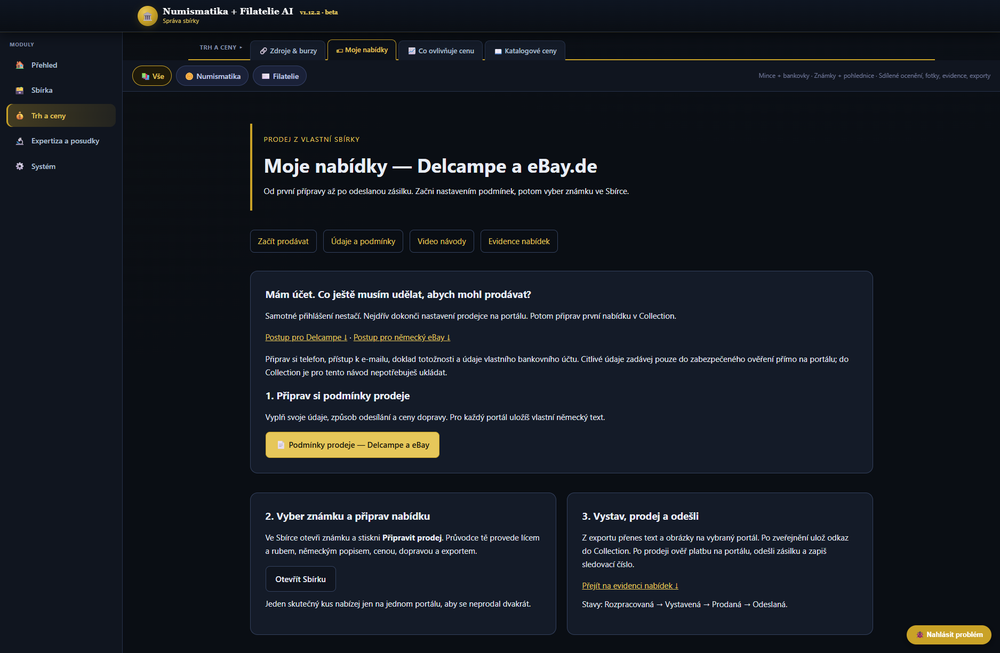
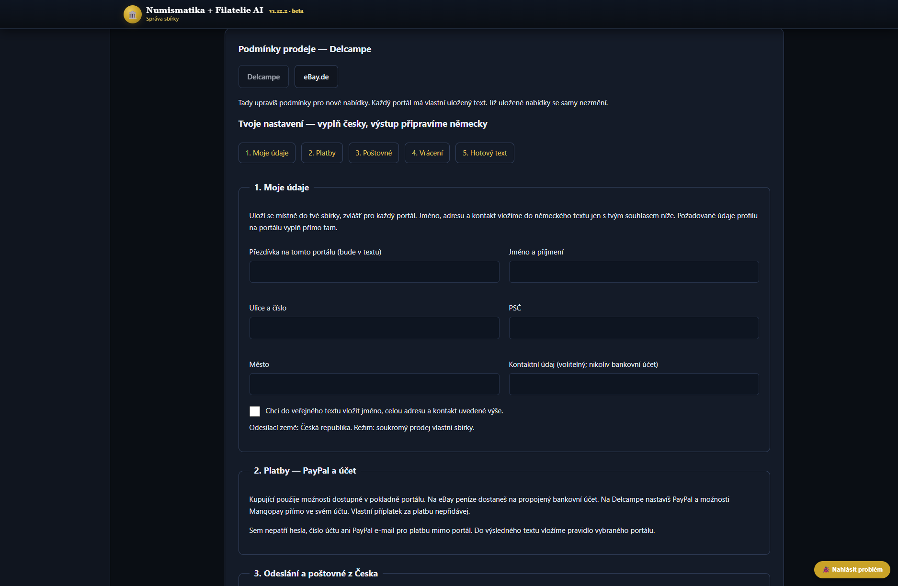
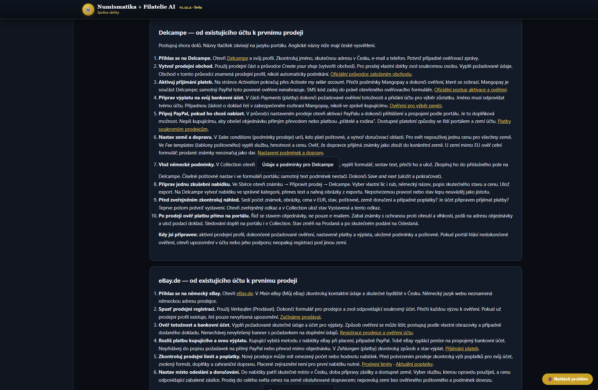
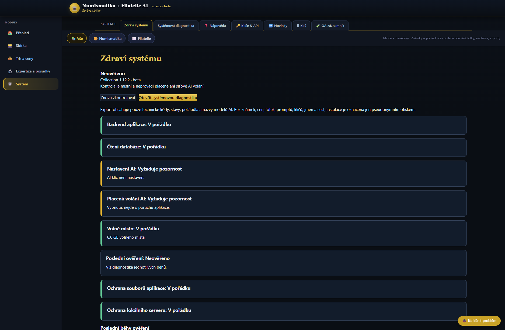
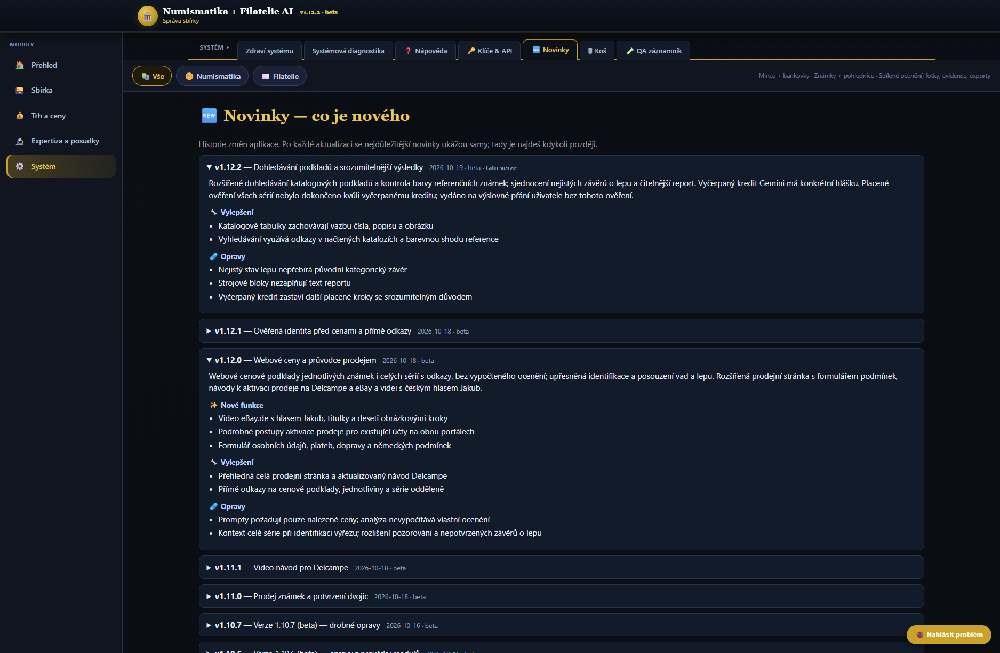

🪙Collezione — Numismatica & Filatelia
Catalogo personale di monete, banconote, francobolli e cartoline in stile casa d'aste. L'AI riconosce il pezzo da una foto e compila i dati, l'app mostra dove lo stesso pezzo si vende davvero (mercati e aste) e registra cosa alza o abbassa il valore. I dati reali restano in locale da me — niente cloud, niente account, niente pagamenti.
HTML/JS Python + FastAPI SQLite AI Gemini (vision) Windows (.exe)
Cosa fa
Perché esiste: un amico di lavoro colleziona monete e francobolli per hobby e mi faceva mille domande — cos'è questo pezzo, dove lo cerco, a quanto si vende. Così gli ho costruito un'app per fare chiarezza: si fotografa il pezzo, l'app aiuta a identificarlo e a dargli una valutazione indicativa, e rimanda subito ai posti dove verificare il prezzo. Gira in locale, sembra il catalogo di una casa d'aste, nessun account, nessun dato in giro.
Due modalità: una demo pubblica (solo dati di esempio, nel browser) e la versione completa sul mio PC con database, foto e AI propri. La collezione reale non lascia mai il computer.
Riconoscimento AI da foto: fotografo una moneta o un francobollo, l'app manda la foto all'AI (Gemini) che legge il testo sul pezzo e precompila il modulo — categoria, paese, anno, valore nominale, stato. Poi basta controllare e salvare. Gestisce anche entrambi i lati insieme (dritto + rovescio). Se la foto è sfocata o non è una moneta, l'app non compila nulla e chiede una nuova foto (come la verifica di un documento).
Dove si vende: sfoglio cataloghi e negozi (Numista, Pofis, Colnect, Delcampe…) direttamente nell'app — ogni risultato mostra nome, prezzo e immagine, e i prezzi in valuta estera vengono convertiti in corone secondo il cambio della Banca nazionale ceca. Per ogni pezzo tengo anche uno storico dei prezzi nel tempo, per vedere dove va il valore. Vedi subito a quanto si vende davvero lo stesso pezzo — non a quanto qualcuno lo chiede.
Aiuto per principianti: una pagina dedicata spiega l'AI (Gemini) in modo semplice — come ottenere una chiave gratuita e quanto costa — oltre alle foto col telefono, ai backup e alla sicurezza. La chiave AI si inserisce direttamente nell'app e resta solo sul computer.
Cosa influenza il prezzo: sezione educativa — cosa alza il valore (grade più alto, errori di conio, certificazione, gomma NH nei francobolli) e cosa lo abbassa (pulizia, fori, difetti). Per non comprare e vendere alla cieca.
Import massivo: chi ha già una lista in Excel la carica in un colpo solo (CSV / XLSX) invece di cliccare pezzo per pezzo.
Funzioni chiave
- Catalogo in stile casa d'aste — look scuro con accenti oro, dettaglio del pezzo come un "lotto" d'asta (foto grande, parametri, valutazione).
- Riconoscimento AI da foto — Gemini legge il testo su moneta/francobollo e precompila i campi; dritto + rovescio in un passaggio; controllo qualità foto (foto scarsa = nessuna valutazione).
- Cataloghi direttamente nell'app — sfoglia cataloghi e negozi cechi ed esteri (monete, francobolli) nella finestra dell'app: nome, prezzo, immagine, link alla fonte. Prezzi esteri convertiti in corone (cambio CNB), storico prezzi del pezzo nel tempo. Regola: "il prezzo realizzato batte il prezzo richiesto".
- Aiuto per principianti — una pagina che spiega la chiave AI (Gemini), le foto, i backup e la sicurezza; ogni punto che si collega a internet/AI ha un pulsante ℹ con la spiegazione.
- Cosa influenza il prezzo — fattori ↑/↓ separati per monete e francobolli + come si compone un prezzo (catalogo vs. asta vs. stima).
- Verifica semplice (dalla 1.2.6, da allora ampliata) — controllo rapido di un francobollo: fronte + retro, controllo locale della qualità della scansione, scelta del modello Gemini con listino e stima del costo in anticipo, 14 controlli (identificazione, stato e autenticità, valutazione di mercato, analisi acquisto/vendita, ricerca sul web tramite Google Search in Gemini). Il risultato è un rapporto con prezzo indicativo, livello di sospetto sull'autenticità, tabella dei controlli usati, fonti web, token consumati e costo della verifica (USD e CZK), esportabile in PDF/DOCX. Senza chiamate a pagamento abilitate funziona gratis come simulazione. Il rapporto indica solo ciò che poggia su una fonte documentata.
- Serie e fogli in una volta (dalla 1.3.0) — un intero foglio o foglietto viene diviso in singoli francobolli (al massimo 40 pezzi), fronti e retro vengono abbinati e prima della verifica li controllo affiancati e li correggo. Ogni francobollo ha il proprio risultato, la serie ha un proprio prezzo indipendente e i costi si sommano per l'intero lotto.
- Prezzi documentati con link (dalla 1.2.7, ampliati nelle 1.9–1.12) — l'app cerca offerte e vendite concluse, prima di cercare i prezzi verifica serie, anno e numero di catalogo e mostra intervalli condizionati per stato, variante e unità con link alle fonti. Ciò che non si può documentare non si inventa — se manca un riscontro, l'app lo dice.
- Odontometro (dalla 1.10.2) — misura la dentellatura direttamente dalla scansione e mostra i fori usati; con un righello scansionato fino a ±0,05. Non è una conferma esperta della variante.
- Salvataggio nella collezione (dalla 1.5.0) — i francobolli effettivamente analizzati vengono archiviati automaticamente con foto e link alle fonti; i suggerimenti IA restano non confermati, non si creano duplicati e l'intera collezione si può spostare in un cestino reversibile.
- Vendita privata (dalla 1.11.0) — guida alle offerte per Delcampe ed eBay.de: offerte in tedesco, foto, spese di spedizione, condizioni modificabili, gestione di vendita e spedizione e video guida offline. Le offerte si pubblicano a mano.
- Stato del sistema e diagnostica (dalla 1.8.0) — stato dell'app e pacchetto di diagnostica locale senza foto, prompt, chiavi e dati della collezione; per ogni verifica si vedono il modello usato e la risposta del servizio. Il limite di spesa per l'IA si imposta direttamente in Chiavi & API.
- Perizie — perizia per ogni pezzo come voce immutabile con audit trail (nulla può essere sovrascritto, solo aggiunta una nuova). Perizia AI tramite Gemini con scelta del modello, confronto con i segni di falsi/autenticità dal database dei marcatori. Resta una valutazione visiva preliminare, non una perizia ufficiale né un certificato; autenticità solo come livello verbale di sospetto, mai in percentuale — la calibrazione dell'autenticità non è ancora stata eseguita.
- Valutazione con prove — a ogni pezzo si allega la fonte (catalogo / asta realizzata / perizia); le offerte attive non entrano nella media.
- Foto dei pezzi — fronte/retro, visibili nella scheda e nel dettaglio.
- Import / export — import massivo da CSV/Excel, export CSV / Excel / PDF / ZIP.
- In locale e al sicuro — SQLite + foto solo sul mio PC; su GitHub vanno solo codice e dati di esempio. L'app Windows avvia il backend da sola con un click.
Anteprime







Stato
🔒 L'app non è scaricabile pubblicamente. Qui non troverai l'installer, di proposito — mando il link di persona a chi do l'applicazione. Il numero di versione in questa pagina resta: si compila da solo dalla stessa fonte da cui l'app installata prende gli aggiornamenti silenziosi.
Novità della 1.13.0 beta: verifica di tutti i francobolli e delle emissioni comuni prima della ricerca dei prezzi sul web con collegamenti diretti. Impostazioni economiche con un clic, anche con esame dei difetti e della gomma. Le identità non verificate bloccano la ricerca dei prezzi. La verifica a pagamento della precisione su tutte le serie reali resta incompleta.
Novità della 1.12.4 beta: correzioni ai riferimenti delle serie più grandi, caricamento progressivo e ricerca delle serie. La verifica a pagamento di tutte le scansioni resta incompleta per credito esaurito; questa versione non dimostra la precisione del riconoscimento.
Novità della 1.12.3 beta: per le emissioni difficili da determinare (Hradčany, PČ 1919, SO 1920, Protettorato, Germania, Austria 1850 e 1867, Penny Red e altre) il rapporto indica cosa osservare — quale caratteristica decide la varietà e il prezzo, a quali falsi fare attenzione e cosa non si può stabilire da una scansione. In base alla guida pubblica di Znamky.cz, con parole nostre.
Novità della 1.12.2 beta: ricerca delle fonti ampliata, conclusioni coerenti sulla gomma e rapporti più chiari. I test a pagamento di tutte le serie non sono completati per esaurimento del credito.
Novità della 1.12.1 beta: verifica di serie, anno e numero di catalogo prima della ricerca dei prezzi; collegamenti diretti alle emissioni e alle offerte nel rapporto.
Novità della 1.12.0 beta: prezzi trovati sul web con fonti per francobolli e serie, pagina di vendita ampliata con condizioni modificabili e guide di attivazione. Tutorial offline illustrati per Delcampe ed eBay.de con voce ceca.
Novità della 1.11.1 beta: guida offline alla prima offerta su Delcampe, con voce ceca, sottotitoli e dieci passaggi illustrati.
Novità della 1.11.0 beta: guida alle offerte in tedesco per Delcampe ed eBay, foto, condizioni modificabili e gestione delle vendite. Corretta la conferma delle coppie di francobolli. Pubblicazione manuale.
Novità della 1.10.7 beta: piccole correzioni dalla revisione dell’app. La ricerca nella collezione ignora i segni diacritici, l’esportazione CSV si apre in Excel con i caratteri corretti, l’esportazione sicura per la condivisione esclude le note private, la cronologia registra solo le modifiche reali, lo stesso marcatore non viene aggiunto due volte e i testi hanno diacritici e forme plurali corrette.
Novità della 1.10.6 beta: il modello IA predefinito è ora Gemini 3.8 Flash (perizia, verifica) e 3.5 Flash-Lite (domande rapide) — funzionano anche con una nuova chiave Google, dove la serie 2.5 dà errore. La pagina Chiavi & API offre i modelli della serie 3. Corretti ordinamento del catalogo, panoramica senza valutazioni, importazione dal browser (anno e paese), esportazione sicura senza cestino, indice della guida; i risultati dimostrativi sono chiaramente marcati DEMO.
Novità della 1.10.5 beta: il pacchetto di diagnostica mostra per ogni verifica il modello IA e la risposta del servizio (ad es. HTTP 404 = modello non disponibile per questo account) e indica cosa fare. L’esportazione conferma il salvataggio e il nome del file contiene data e ora, così non si accumulano più copie “(4)”, “(5)”.
Novità della 1.10.4 beta: nella scelta del modello IA ci sono Gemini 3.8 Flash, 3.6 Flash e 3.1 Flash-Lite. Google non consente più ai nuovi account (nuova chiave API) di usare la serie 2.5 — con una chiave nuova basta scegliere un modello della serie 3. I prezzi seguono il listino Google; l’aumento annunciato dal 1° gennaio 2027 viene applicato automaticamente.
Novità della 1.10.3 beta: quando una risposta dell’IA si blocca ripetendo sempre la stessa cosa, l’app la accorcia e la ripete una volta, così il rapporto non contiene più decine di pagine inutili. I dati di prezzo contraddittori o che rimandano solo a risultati di ricerca non entrano nel confronto; in un foglio ogni prezzo indica a quale francobollo appartiene.
Novità della 1.10.2 beta: odontometro — l’app misura la dentellatura direttamente dalla scansione e mostra i fori usati; con un righello scansionato fino a ±0,05. Il rapporto ha link cliccabili alle fonti e immagini dei francobolli con la descrizione dello stato; i prompt hanno una spiegazione ⓘ.
Novità della 1.10.1 beta: verifica più affidabile di una serie confermata — ogni francobollo viene identificato separatamente, un errore non ferma gli altri e, se nessuno viene completato, l’app indica una causa precisa.
Novità della 1.10.0 beta: più riscontri di prezzo da offerte e aste concluse, stato dei francobolli, descrizioni e link diretti. Francobolli singoli, serie e foglietti restano distinti. Nuove fonti Danner, Schultze e Philea, ricerca Burda ampliata ed eBay Browse con accesso API disponibile. I prezzi richiesti sono distinti dai risultati di vendita.
Novità della 1.9.1 beta: quando l’app raggiunge il proprio limite di spesa per l’IA lo dice chiaramente — prima sembrava un errore di connessione, anche se non era stato inviato né addebitato nulla. Il limite in USD si imposta, modifica o rimuove direttamente in Chiavi e API.
Novità della 1.9.0 beta: intervalli condizionati di acquisto e vendita per stato, variante e unità. Offerte separate dalle vendite concluse, ipotesi e fonti nell’app e nei PDF/DOCX. Le citazioni IA non equivalgono alla verifica indipendente delle fonti.
Novità della 1.8.3 beta: stima del costo dell’intero lotto, avanzamento del caricamento e dell’analisi IA con tempo trascorso, risultati salvati più rapidi ed esportazioni PDF/DOCX più leggibili. Il riepilogo indica prezzi non documentati e valutazione disattivata.
Novità della 1.8.2 beta: corretta la separazione delle serie su sfondo scuro con margini bianchi. Occorre confermare i ritagli. Un’identificazione non valida blocca le analisi successive e mostra una causa comune nel rapporto e nel PDF.
Novità della 1.8.1 beta: corretto il download dei pacchetti ZIP diagnostici nell’app desktop. Si apre la finestra Salva con nome. Contenuto e protezione dei dati restano invariati.
Novità della 1.8.0 beta: stato del sistema, diagnostica ed esportazione ZIP locale senza dati sensibili. Le scansioni grandi vengono trasferite a blocchi senza modificare i pixel. Correzione non ancora validata con IA dal vivo; non è una perizia ufficiale.
Novità della 1.7.4 beta: trasferimento dedicato delle scansioni grandi all’IA senza ridurre la risoluzione. Gli errori di trasferimento sono distinti dall’identificazione incompleta. Questa correzione non è stata validata con un test IA dal vivo; non è una perizia ufficiale.
Novità della 1.7.3 beta: i francobolli chiari su sfondo bianco mantengono il contorno completo del recto e del verso. Parti del disegno e linguelle bianche non diventano altri francobolli. Le anteprime automatiche obsolete vengono aggiornate, conservando modifiche manuali e coppie confermate. I bordi ambigui o tagliati restano limiti espliciti; il ritaglio non prova l’autenticità.
Novità della 1.7.2 beta: resoconti leggibili dei francobolli e della serie senza blocchi tecnici. Un modello AI non disponibile interrompe la verifica indicando la causa, senza attribuirla alla scansione. Supporto Gemini 3.5 Flash-Lite e pulsante per preparare una nuova verifica conservando scansioni e abbinamenti. Prezzi e stato non vengono inventati.
Novità della 1.7.1 beta: scegliendo una nuova scansione vengono subito rimossi risultato, abbinamento, vecchio verso e dati del francobollo precedente. Un errore di caricamento non ripristina il vecchio resoconto. Controlli selezionati, cronologia e collezione restano conservati. Gli input sono bloccati durante la verifica.
Novità della 1.7.0 beta: prezzi dei singoli francobolli e stime indipendenti di serie/foglietti basate su vendite documentate del lotto completo. La somma dei singoli e il valore della serie non vengono sommati. Controllo delle istruzioni ripetute e suggerimento di un modello AI disponibile prima della verifica. Avvisi 600 DPI corretti e resoconti sintetici e dettagliati in PDF/DOCX. Le citazioni dei certificati restano non confermate; i registri APS/APEX e PF non sono attualmente accessibili automaticamente. L’app non è una perizia ufficiale.
Novità della 1.6.1 beta: nel pannello dei prompt puoi attivare o disattivare identificazione, valutazione di stato e autenticità, stima di mercato e analisi di acquisto/vendita. Le caselle condividono la scelta con i controlli e il costo stimato; i prompt disattivati non vengono eseguiti e le scelte restano nelle verifiche salvate. La valutazione dell’intera collezione e il controllo dei lotti restano non disponibili qui, con spiegazioni. L’app non è una perizia ufficiale.
Novità della 1.6.0 beta: prima della verifica di più francobolli, confronta affiancati i fronti L1/L2 e i retro R1/R2, modifica manualmente gli abbinamenti e correggi i ritagli. Gli abbinamenti confermati restano nelle analisi individuali, nella cronologia, nelle esportazioni e nella collezione. Le proposte automatiche confrontano i dettagli dei bordi con rotazioni e riflessioni; i retro incerti restano non abbinati. La precisione automatica non è calibrata e la conferma non certifica identità, gomma o autenticità. L’app non è una perizia ufficiale.
Novità della 1.5.0 beta: i francobolli analizzati singolarmente vengono archiviati automaticamente nella collezione con foto, risultati e collegamenti alle fonti web trovate. Le proposte dell’IA restano non confermate. I salvataggi ripetuti non creano duplicati e gli elementi eliminati non vengono ripristinati automaticamente. L’intera collezione può essere spostata nel cestino dopo conferma. Simulazioni e ritagli incerti sono esclusi; il salvataggio non certifica identità o autenticità.
Versione attuale 1.13.0 BETA (ottobre 2026). La panoramica delle app è nella pagina Le mie app. Demo pubblica + versione completa locale (web e Windows .exe). Privata, per uso personale — nessun hosting pubblico di dati reali, nessun account, nessun pagamento. Nota: l'app cataloga e dà valutazioni indicative — non è una perizia professionale. Verifica sempre i prezzi reali su un mercato. Lo storico dettagliato è nel .
Guarda: Collection — catalogo, dettagli della moneta e backup
9:24 · Commento e sottotitoli in ceco.